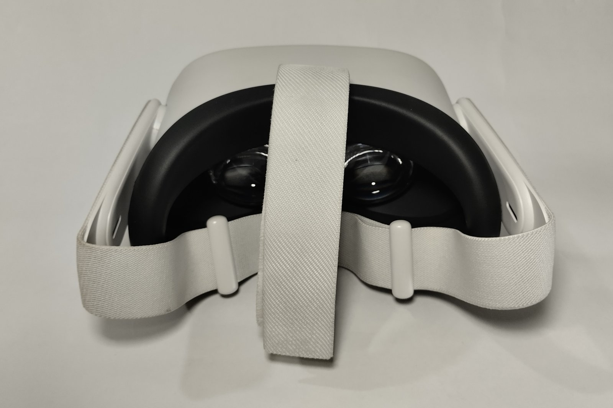

The Autopsy Report · Device #095
The Meta Quest 2 (2020)
The standalone VR headset that sold by the millions — a Snapdragon XR2, six gigabytes of RAM, and a shell company on the FCC paperwork. We haven't opened one yet; the filings and teardowns tell the story instead.
What is this thing?
The Quest 2 (launched as the Oculus Quest 2, later rebranded Meta) is a standalone virtual-reality headset: no PC, no phone, no wires — the computer is inside the visor. It launched October 13, 2020 and became the best-selling VR headset of its era by undercutting everything else on price while shipping a genuinely capable chip, the Qualcomm Snapdragon XR2, with 6 GB of RAM. iFixit Road to VR teardown
Hardware model KW49CM, certified under FCC ID 2AS7A-B3KF1 — under the applicant name Imaginante, LLC, one of Meta's equipment-authorization shell entities. FCC label
Not yet on our bench
We don't own a Quest 2, so nothing here comes from our hands: no disassembly, no board photos, no measurements, no boot logs. Everything below is built from public records — the FCC certification filing, iFixit's teardown record, and a published disassembly — with each claim linked to its source. When a unit lands on our bench, we'll verify the hardware firsthand and update this page.
A short history
- December 2019A head-mounted display, model KW49CM, arrives at the test lab; radio testing runs December 26–27, 2019. FCC DFS report
- May 21, 2020Imaginante, LLC authorizes Sporton International to act on the FCC filing. FCC authorization letter
- August 14, 2020The DFS test report for the 5 GHz radios is issued. FCC DFS report
- September 2020Oculus announces the Quest 2; it ships October 13, 2020 with the Snapdragon XR2 and 6 GB RAM. iFixit
- 2021–presentThe Oculus brand retires into Meta; the Quest 2 keeps selling as the default entry to VR. iFixit
The outside
A white visor with four corner tracking cameras, a cloth head strap, and two controllers — the whole design says "appliance," not "lab equipment." The regulatory label (FCC ID, model KW49CM) hides inside the side strap. FCC label

The board
Published disassemblies show a single main board dominated by the Snapdragon XR2 under a heatsink-and-fan assembly — active cooling in a headset, because the XR2 is a phone-class chip running hard. SanDisk flash provides storage, and the board carries the camera, display, and battery interconnects a standalone headset needs. One caution: one published teardown summary mislabels the SoC as an XR1 — the corroborated record (iFixit, Road to VR, Qualcomm's platform announcement) is XR2, and we follow it. Road to VR teardown iFixit
The FCC filing's internal photos (public after short-term confidentiality) document the same hardware from the certification lab's bench. Schematics, block diagram, parts list, operational description, and tune-up procedure are permanently confidential. FCC confidentiality letter
Under the microscope: the chips
What's on the board, what each part does, and how sure we are. Confirmed means a primary source (FCC exhibit or manufacturer document). Likely means well-corroborated public records.
| Chip | What it does | How we know | Dig deeper |
|---|---|---|---|
| Qualcomm Snapdragon XR2 | The whole computer: octa-core CPU, Adreno-class GPU, and dedicated vision/AI processing for the headset's cameras. Qualcomm's platform brief claims roughly twice the CPU/GPU performance of the Snapdragon 835, 3K×3K per-eye rendering at 90 fps, seven-camera support, and 15 TOPS of AI compute. | Likely Identified in iFixit and Road to VR teardowns; specs from Qualcomm's platform announcement coverage. | Platform announcement |
| SanDisk iNAND 8521 UFS 2.1, 64 GB |
Flash storage for the OS, apps, and games. | Likely SanDisk storage identified in the Road to VR teardown; the 8521 / UFS 2.1 / 64 GB part identity from hardware records. | Road to VR teardown |
| 6 GB RAM | Working memory for the XR2 — double the original Quest. | Likely iFixit's device record. | iFixit device page |
The government's file on this headset
The Quest 2 carries FCC ID 2AS7A-B3KF1, applicant Imaginante, LLC, model KW49CM, described in the filings as a head-mounted display. The DFS report — covering the 5 GHz Wi-Fi radios that share spectrum with weather radar — was issued August 14, 2020 after late-December 2019 testing. The label exhibit shows the e-label/printed label placement inside the side strap, marked "Made in China." Schematics, block diagram, parts list, operational description, and tune-up procedure are permanently confidential; the remaining exhibits took 180-day short-term confidentiality. FCC DFS report FCC confidentiality letter FCC label
The exact grant date isn't in the exhibits we reviewed — the authorization letter (May 21, 2020) and DFS report (August 14, 2020) bracket the certification window. We state the window, not a date we can't source.
Debug and service modes
Nothing about a debug header, serial console, or service mode for this hardware is documented in the public records we reviewed, and we claim nothing. Our posture throughout: we listen, we don't knock. If a bench unit ever reveals a diagnostic interface, we'll document it read-only — never bypasses, never credential or key extraction.
What public records show
- A phone-class SoC running hard enough to need a fan — the XR2 plus active cooling is the headset's whole thermal story. Road to VR teardown
- Meta certifies hardware through named subsidiaries (Imaginante, LLC here) — a common industry practice for keeping product names out of public filings before launch. FCC authorization letter
- The 5 GHz radio needed DFS certification — the headset shares spectrum with weather radar and must prove it yields. FCC DFS report
What we haven't done
- No disassembly — we don't own a unit.
- No board-level verification of the XR2, flash, or RAM identities.
- No thermal, power, or radio measurements of our own.
- No boot-log or firmware observation of any kind.
By the numbers
- Model: KW49CM (Quest 2) · FCC ID: 2AS7A-B3KF1 · Applicant: Imaginante, LLC
- SoC: Qualcomm Snapdragon XR2 · RAM: 6 GB · Storage: 64 GB (SanDisk iNAND 8521, UFS 2.1)
- Launched: October 13, 2020
- DFS report: issued August 14, 2020 (5 GHz radios)
- Permanently confidential: schematics, block diagram, parts list, operational description, tune-up procedure
Words to know
Every term this page uses, in plain English. No prior knowledge required.
- Standalone VR
- A headset with its own computer inside — no PC, phone, or cable required.
- System on a chip (SoC)
- The whole computer — processor, graphics, and more — on one piece of silicon.
- TOPS
- Trillion operations per second — a measure of AI accelerator throughput.
- UFS
- Universal Flash Storage — the fast flash interface phones and headsets use for storage.
- DFS
- Dynamic Frequency Selection — the rule that 5 GHz Wi-Fi devices must detect and yield to radar (including weather radar) on shared channels.
- Shell applicant
- A subsidiary name used on regulatory filings — common practice for keeping unannounced products out of public records before launch.
- FCC
- The Federal Communications Commission — the U.S. agency that regulates anything that transmits radio. Every wireless gadget sold here has to pass its tests first.
- FCC ID
- The ID the FCC assigns to each approved wireless product. Punch it into fccid.io and the whole public filing comes up.
Sources & confidence
- FCC ID, applicant, model, head-mounted-display description, DFS dates, label placement, confidentiality scope: FCC exhibits. Confirmed (primary source).
- XR2 SoC, 6 GB RAM, October 13, 2020 launch: iFixit device record. Likely (published teardown record; unconfirmed by us).
- XR2, SanDisk storage, fan/heatsink: Road to VR disassembly. Likely.
- XR2 platform specs (3K×3K/90fps, 7 cameras, 2× 835 performance, 15 TOPS): Qualcomm platform announcement via press coverage. Likely.
- iNAND 8521 / UFS 2.1 / 64 GB part identity: hardware records; Likely pending bench verification.
- Device photo: Wikimedia Commons, CC BY-SA 4.0.
- Anything not listed here is unknown until the bench says otherwise. We'll say so, out loud, when that's the case.
Legal note. BareBoard is an educational project. This report is built entirely from public records — we own no Quest 2 hardware and performed no testing. We don't publish, host, or distribute firmware, keys, passwords, or credentials. Product names and trademarks belong to their respective owners and appear here only to identify the hardware. If you believe anything here infringes your rights, contact us and we'll address it promptly.